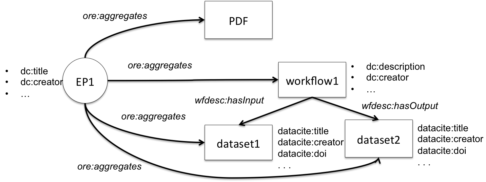
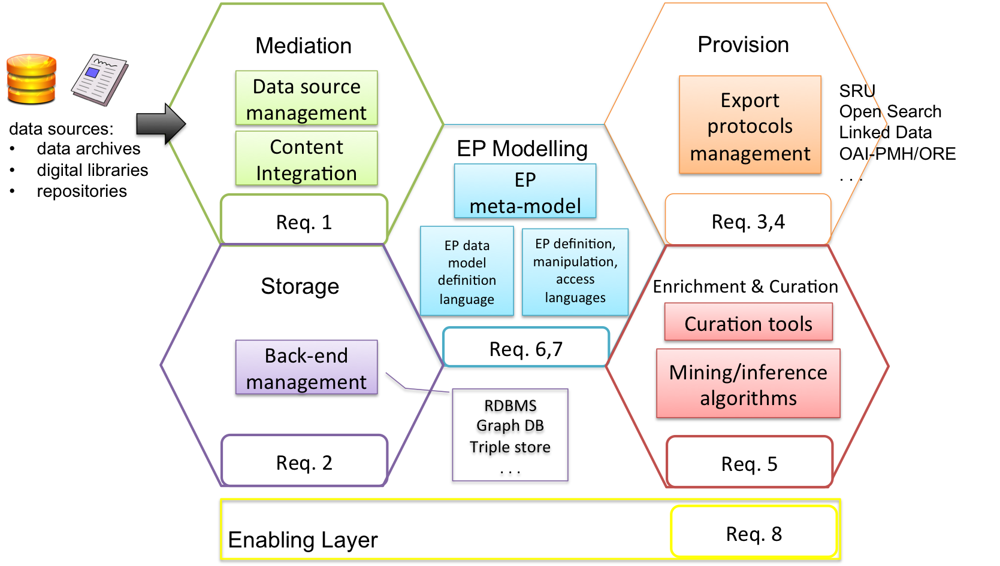
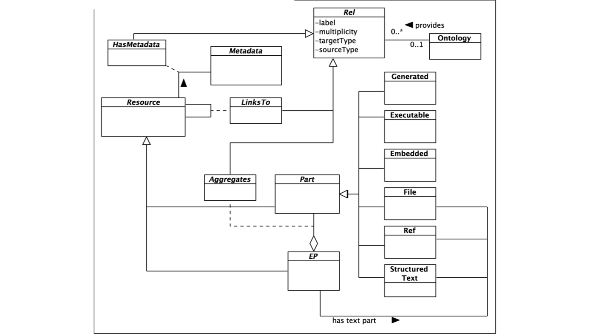

Enhanced Publication Information Systems (EPISs) are information systems devised for the management of enhanced publications (EP), i.e. digital publications enriched with (links to) other research outcomes such as data, processing workflows, software.
Today, EPISs are typically realised with a from scratch
approach that entails
non-negligible implementation and maintenance costs.
This work argues for a more systemic approach to narrow those costs and presents the notion of Enhanced Publication Management Systems, software frameworks that support the realisation of EPISs by providing developers with EP-oriented tools and functionalities.
Enhanced publications (EPs) are digital publications enriched with, and/or linked to, related research results, such as research data, processing workflows, software, and connections among them .
shows an example of EP composed of semantically linked parts that represent different kinds of outcome of a scientific research (scientific publication in PDF, datasets, processing workflow).

The types of entities, in terms of structure and semantics, that can form an EP are defined by an EP data model. An EP data model can be adopted by an Enhanced Publication Information System (EPIS), that is an information system devised for the management of EPs compliant to a specific EP data model.
The realization and maintenance of EPISs typically entail non-negligible costs, as designers and developers have little or no technological support oriented to EPs. In fact, they will realize EP-oriented software addressing the peculiarities of the community to serve, by integrating technologies that are general purpose (e.g. databases, file stores) and Digital Library-oriented (e.g. repository software, cataloguing systems). The resulting products are often not flexible enough to be adapted to the evolving requirements of the community they target and hardly re-usable and configurable for different application domains with similar requirements.
A more systemic approach would decrease the cost of realization and maintenance of EPISs and support developers with EP management tools that hide the complexity of the underlying technologies.
Like Data Base Management Systems had been introduced to collect common functionalities used by different applications dealing with data, EPMSs could be introduced into the scholarly communication scenario, offering to developers an EP-oriented framework for the modern representation of scientific research outcomes.
An EPMS is a framework that should provide tools to support the development of EPIS for any application domain. As such, an EPMS should not make any assumption about the structure and semantics of the EPs it will manage. Instead, an EPMS should provide tools for the definition of EP data models, including the selection of ontologies to use, and its functionalities should be configurable based on a given EP data model. By analysing the requirements of existing EPISs, we have identified a set of minimal requirements that an EPMS should satisfy:
Supporting the integration of heterogeneous content from dynamic data sources
Supporting the adoption of different storage back-ends
Enabling EP sharing via standard protocols (e.g. Linked Data, OAI-PMH/ORE, Search/Retrieve via URL (SRU), OpenSearch)
Supporting portability
Supporting the enrichment and curation of EPs
Enabling the definition of customized EP data models
Offering languages for EP definition, manipulation and access
Supporting the addition of new domain-specific functionalities
The high-level design of an EPMS has been designed so that each functional area addresses a specific class of requirements, as shown in .

In particular, in order to allow the customization of the EP data model, the EP Modelling area offers the EP meta-model ( ), which is a data model oriented to the design of EP data models . EP is a Resource that Aggregates at least one narration (via the has text part relationship) and possibly other Parts. A narration represents a digital publication to enhance and can be of type File (i.e. a file locally hosted), Ref (i.e. a link to a remote file), or Structured Text (e.g. JATS XML). Parts are Resources that reflect the data model features described above: embedded parts (Embedded), structured-text parts (Structured Text), reference parts (Ref), executable parts (Executable), and generated parts (Generated). Resources can have a unique identifier and descriptive metadata. Resources can be linked with each other via relationships (Rel) (for example to represent versioning relationships between EPs). The attribute label, a free term or a term from an Ontology, expresses the semantics of a relationship.

This work is partially supported by the EC-funded project OpenAIREplus (FP7-INFRA-2011-2, Grant Agreement 283595).
This poster was also presented at the Force2015 Conference, Oxford, UK.
Bardi A., Manghi P. A Framework Supporting the Shift from Traditional Digital Publications to Enhanced Publications. In: D-Lib Magazine, vol. 21 (1/2) article n. 3. Special issue on Linking and Contextualizing Publications and Datasets. Laurence Lannom (ed.). Corporation for National Research Initiatives, 2015. doi:10.1045/january2015-bardi
Bardi A., Manghi P. Enhanced publications: data models and information systems. In: Liber Quarterly, vol. 23 (4) pp. 240 - 273. Association of the European Research Libraries, 2014. pid:URN:NBN:NL:UI:10-1-116065
Woutersen-Windhouwer Brandsma, R., et al. Enhanced Publications: Linking Publications and Research Data in Digital Repositories. Amsterdam University Press, 2009. doi:10.5117/9789089641885